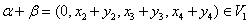
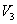

3.4 向量空间
一、向量空间的概念
显然中任意两个向量的和向量还是中的向量；中任意一个向量与一个实数的乘积也是中的向量，今后我们可能只需要讨论中的某个子集合，引入子空间的概念。
定义4.2中的条件（1），（2）说明：要求集合V对向量的加法运算与数乘运算封闭。 的子集是最简单的子空间，称为零空间。 |
|
例1：验证中的以下子集是否为向量空间。 解： 中向量的特征是第一个分量为0，即是由所有第一个分量为0的4维向量组成的子集合，显然是非空的。 在中任取两个向量及常数k，因 ，说明对加法及数乘封闭，故是向量空间。 类似可以验证也是向量空间。 而对集合，显然中任意两个向量的和向量的第一个分量为2，即对加法不封闭，故不是向量空间。 |
|
例2： 由于V是由该向量组的全体线性组合构成的集合，故V对向量的线性运算必封闭，所以V是中一个子空间，称它为由 |
二、基与维数及坐标
由基的定义可知，向量空间V的一个基，实际上就是向量集合V中一个极大线性无关组，V的维数就是极大无关组中所含向量的个数，也即V的秩，因此向量空间的维数是唯一的，不会随基的改变而改变。 |
|
例3：已知中的n维标准向量组 例4：零空间的维数为0。 例5：设，则向量组 注意：（1）前面我们有向量的维数是指向量中分量的个数，现在引入向量空间的维数是指基中基向量的个数，这是两个不同的概念。 （2）若，则V中任意r个线性无关的向量都是V的一个基，而任意两个基都是等价的，例如三维向量中任意三个线性无关向量都是基。 |
|
|
例6：说明构成的一个基，并求出在此基下的坐标。 解：要证明构成的一个基，只要证明线性无关；要求出 考虑线性方程组，其增广矩阵为 可知 方程组有唯一解为于是，所求坐标为 |
|
例7：求中由向量 生成的子空间的一个基和维数。 解：本题相当于求向量组的一个极大无关组和秩设矩阵 因此， |